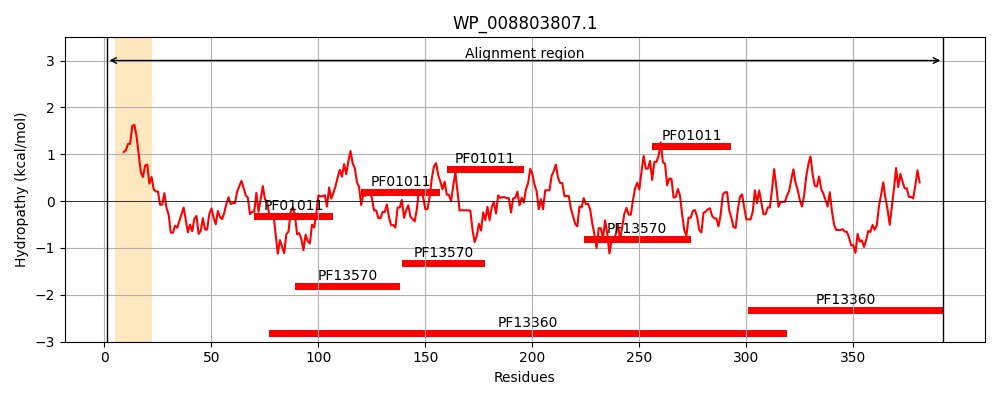

Hit Accession: P77774
Hit TCID: 1.B.33.1.3
Hit Description: gnl|BL_ORD_ID|11537 gnl|TC-DB|P77774|1.B.33.1.3 Hypothetical protein yfgL - Escherichia coli.
Mach Len: 392
e:0.000000
Query TMS Count : 1
Hit TMS Count: 1
TMS-Overlap Score: 0.900000
Predicted Substrates:CHEBI:8526;protein polypeptide chain
BLAST Alignment:
Score: 1852 , Bit scores: 717 bits, E-value: 0.0e+00, Alignment length: 392, Percentage identity: 89
Query: 1 MQLRKLLLPGLLSVTLLSGCSLFNSEEDVVKMSPLPTVENQFTPSTSWSTSVGDGIGEFYSNLHPAFADGVVYAADRKGTVKALNADDGKEVWSVNLAEKDGWFSRVPALLSGGVTVSGGHVYIGSEKAQLYALNTSDGTVAWQTRVAGEALSRPVVSDGMVLVHTSNGQLQALNETDGAVKWTVNLDMPALSLRGESAPATAYGAAIVGGDNGRVSAVLMQQGQMIWQQRISTATGPTEIDRLNDVDTTPIIVNGVVYALAYNGNLTALDLRSGQIMWKRELGSVNDFIVDGNRIYLVDQNDRLLALTTDGGVTLWTQSDLLHRLLTAPVLYNGNLVVGDSEGYMHWVNPEDGHFVAQQKVDSSGFLTDPVVADGRLLIQAKDGTLYAITR 392
MQLRKLLLPGLLSVTLLSGCSLFNSEEDVVKMSPLPTVENQFTP+T+WSTSVG GIG FYSNLHPA AD VVYAADR G VKALNADDGKE+WSV+LAEKDGWFS+ PALLSGGVTVSGGHVYIGSEKAQ+YALNTSDGTVAWQT+VAGEALSRPVVSDG+VL+HTSNGQLQALNE DGAVKWTVNLDMP+LSLRGESAP TA+GAA+VGGDNGRVSAVLM+QGQMIWQQRIS ATG TEIDRL+DVDTTP++VNGVV+ALAYNGNLTALDLRSGQIMWKRELGSVNDFIVDGNRIYLVDQNDR++ALT DGGVTLWTQSDLLHRLLT+PVLYNGNLVVGDSEGY+HW+N EDG FVAQQKVDSSGF T+PV ADG+LLIQAKDGT+Y+ITR
Sbjct: 1 MQLRKLLLPGLLSVTLLSGCSLFNSEEDVVKMSPLPTVENQFTPTTAWSTSVGSGIGNFYSNLHPALADNVVYAADRAGLVKALNADDGKEIWSVSLAEKDGWFSKEPALLSGGVTVSGGHVYIGSEKAQVYALNTSDGTVAWQTKVAGEALSRPVVSDGLVLIHTSNGQLQALNEADGAVKWTVNLDMPSLSLRGESAPTTAFGAAVVGGDNGRVSAVLMEQGQMIWQQRISQATGSTEIDRLSDVDTTPVVVNGVVFALAYNGNLTALDLRSGQIMWKRELGSVNDFIVDGNRIYLVDQNDRVMALTIDGGVTLWTQSDLLHRLLTSPVLYNGNLVVGDSEGYLHWINVEDGRFVAQQKVDSSGFQTEPVAADGKLLIQAKDGTVYSITR 392 | Protein Hydropathy Plots: |
|---|
|  |  |
Pairwise Alignment-Hydropathy Plot:
|
|---|
 |